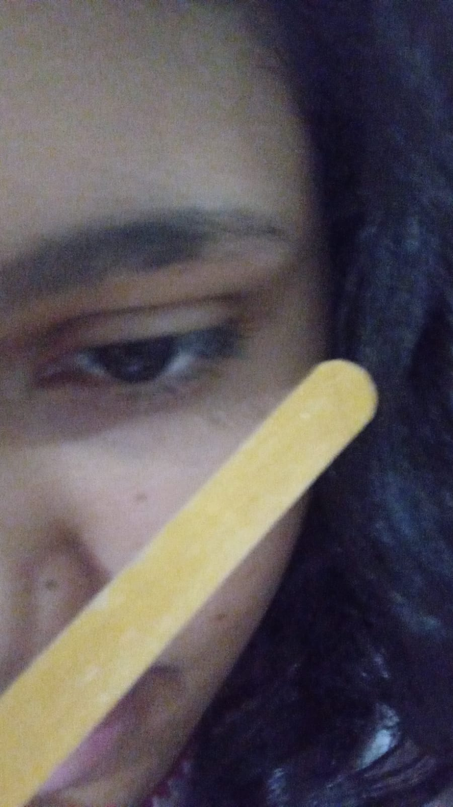
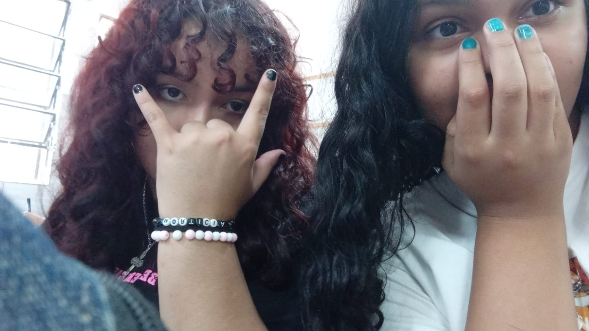
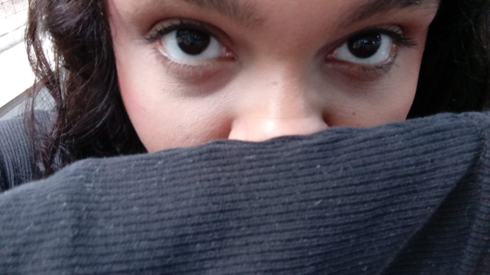

HANAKO
Uma criatura extremamente peculiar foi
encontrada na internet.
Registro de investigação iniciado.
Fevereiro de 2026
Tudo começou de uma maneira extremamente normal.
Um dia qualquer.
Uma call qualquer.
Uma pessoa qualquer no TikTok.
Até que apareceu ela.
Naquele momento, algo aconteceu.
Eu fiquei embasbacado.
E aparentemente pensei:
"Essa pessoa parece interessante."
Quem é Hanako?
A espécime apresenta comportamento altamente imprevisível quando exposta à palavra "ARROCHA".
Também foram registrados episódios frequentes de maquiagem experimental, obsessão por Re:Zero e atividades suspeitas envolvendo Roblox.
Apesar dos riscos...
os pesquisadores decidiram mantê-la por perto.
As provas
Após meses de investigação, alguns acontecimentos foram considerados importantes demais para permanecerem em sigilo.
A dubladora
A capacidade de imitar personagens de forma assustadoramente precisa continua sem explicação científica.
O misterioso "Arrocha"
Uma palavra aparentemente normal que, por algum motivo, possui efeitos extremamente específicos sobre a espécime.
Sensei Gozarei
Origem desconhecida. Necessidade de investigação adicional.
Interrogatório
Agora vamos descobrir se você realmente conhece o indivíduo conhecido como Sensei.
Carregando pergunta...
Investigação concluída.
RESULTADO
0/5
Analisando...
Parabéns por sobreviver ao interrogatório.
Mas ainda existem informações
que os pesquisadores não conseguiram
classificar.
As provas proibidas
Após meses de investigação,
os pesquisadores finalmente reuniram
algumas evidências visuais.
Algumas delas deveriam ter sido destruídas.
Mas nós decidimos preservar a história.
Registro encontrado
A investigação começa a ficar preocupante.

Maquiagem experimental
Os pesquisadores ainda tentam compreender o ocorrido.

Comportamento suspeito
Nenhuma explicação foi encontrada.

Arquivo confidencial
A existência desta imagem será mantida em sigilo.
Todos os registros anteriores foram classificados como investigação.
Este não.
Este arquivo existe simplesmente porque algumas pessoas aparecem por acaso... e acabam se tornando importantes.
Para Hanako
Emilly,
eu acho engraçado pensar que tudo isso começou com uma call aleatória pelo TikTok.
Eu entrei naquela call sem imaginar que encontraria alguém que, além de conseguir imitar a Mita de MiSide de um jeito completamente absurdo, acabaria se tornando uma pessoa tão importante para mim.
Quando você me escreveu aquela carta no meu aniversário, eu fiquei genuinamente muito feliz. Talvez você nem tenha dimensão do quanto aquilo significou para mim.
E durante esses meses você também esteve lá em vários momentos em que eu precisei de ajuda. Muitas vezes você me fez querer sair daquele lugar de simplesmente aceitar ser medíocre e tentar ser alguém melhor.
Por isso, antes de qualquer piada, qualquer "arrocha", qualquer Roblox ou qualquer "Sensei Gozarei", eu queria te agradecer.
Obrigado por ter aparecido naquela call. Obrigado pelas conversas. Pelas risadas. Pelas maluquices. E principalmente por ser minha amiga.
Espero que esse novo ano da sua vida seja cheio de coisas boas, pessoas que te façam bem e momentos que você queira guardar.
Feliz aniversário, Hanako.
Do seu amigo,
Djean